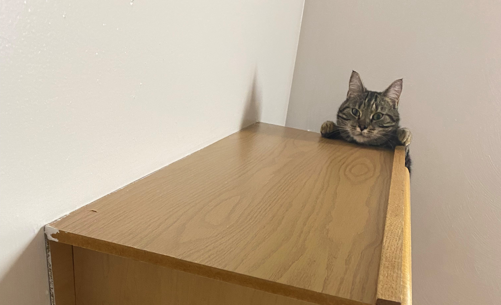

WHY WORKING AT DISNEY NEARLY RUINED THE MAGIC
Congratulations! You've been accepted. Now it's time to lower your expectations before you work at the most magical place on Earth.

RATED W FOR WHY WERE WE ALLOWED TO WATCH THIS AS KIDS?
How badly was Gen Z messed up as kids because of the lack of filters on early YouTube? And do the precautions in place now even help?

HOW AN ANXIOUS PERSON PREPARES TO WATCH A HORROR MOVIE
It's contradictory isn't it, to love horror movies while dealing with severe anxiety. But that's what I deal with. So here's how I cope. Spoiler alert: it involves a cat.
PSSSSSST!
Hey you! Yes you. See this button? It's a donation link to the Trevor Project. No, Freddy Krueger will not show show up in your dreams if you don't donate. I swear.